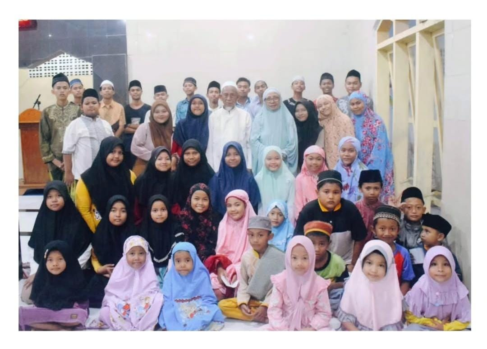
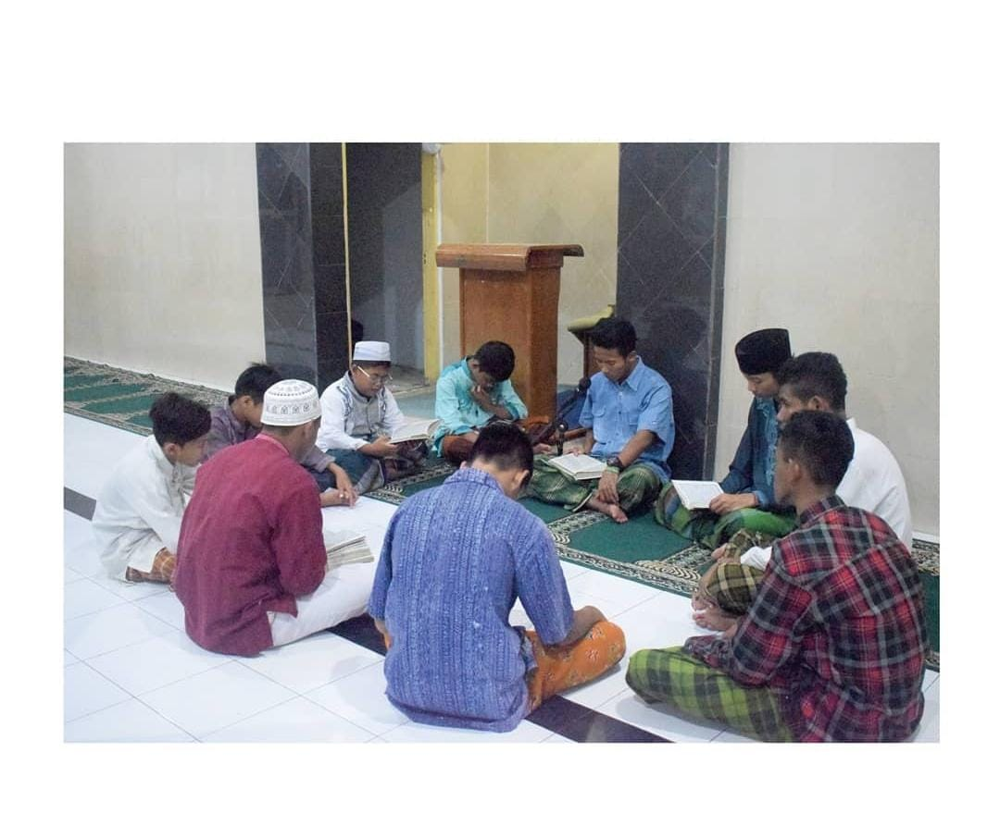
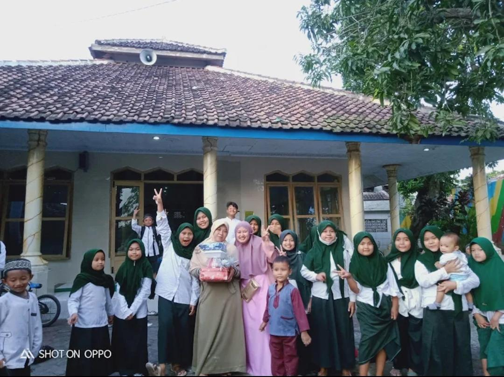
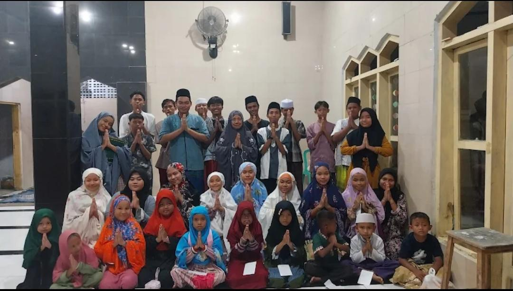
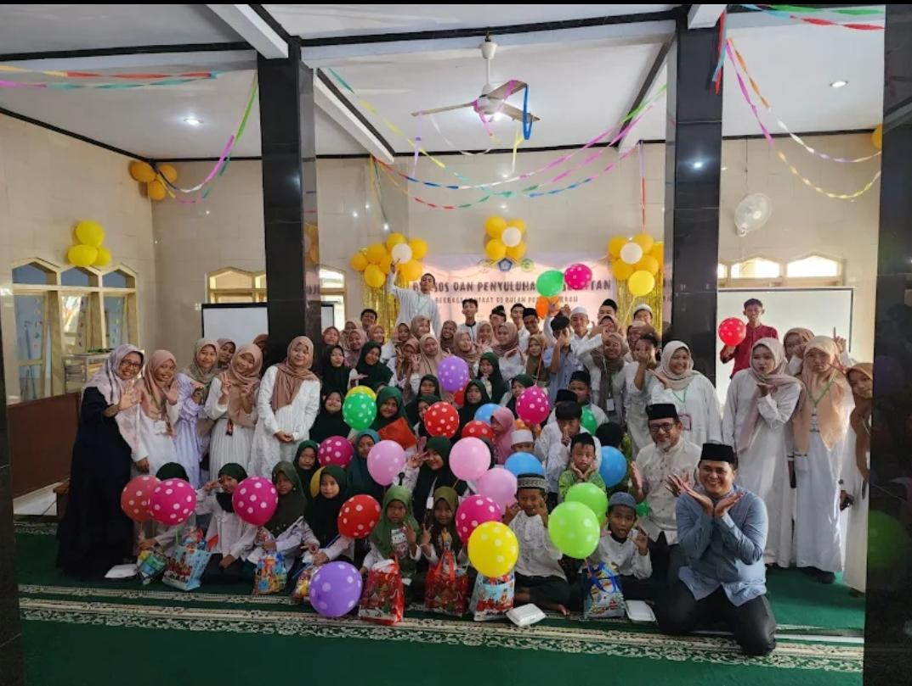
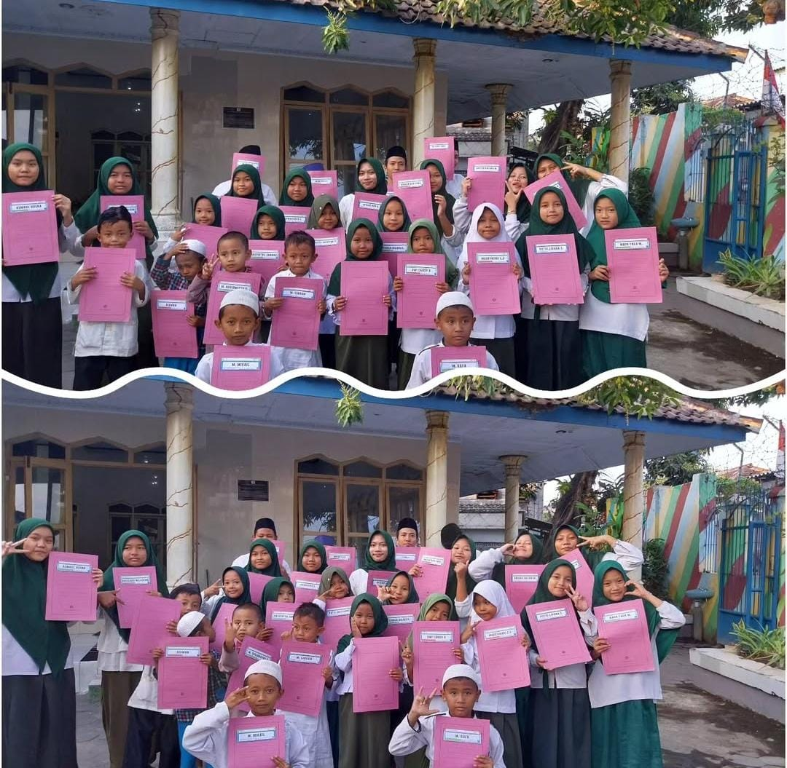

PANTI ASUHAN DARUL MUTTAQIN PASURUAN
Masa Depan Cerah
Dimulai dari Sini
Mari bergabung memberikan kebahagiaan dan pendidikan yang layak bagi putra-putri asuh kami. Setiap dukungan Anda adalah senyuman bagi mereka.
Mulai Pendaftaran
Aktivitas Kami





